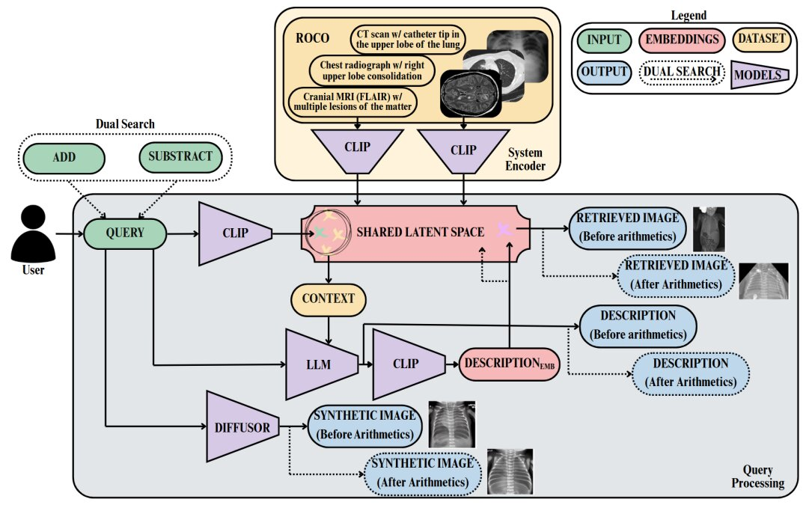
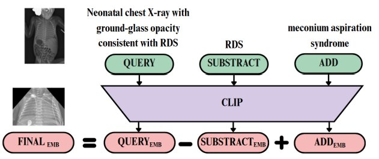

Our Best Student Paper (Honorable Mention) system from MICCAI 2025 for medical image retrieval and generation.
MIRAGE is a multimodal medical text and image retrieval and generation system. It allows users to find and generate clinically relevant images from trustworthy sources by mapping both text and images to a shared latent space, enabling semantically meaningful queries. The entire system relies on publicly available pretrained models, ensuring reproducibility and accessibility as a free, easy-to-use didactic tool for medical students.
Access to diverse, well-annotated medical images is fundamental for training. However, traditional medical atlases are often impractical due to their size and lack of interactivity. Meanwhile, standard online image search may provide mislabeled, out-of-context, or incomplete material, making it an unreliable tool for medical education.
MIRAGE integrates three modules to provide a comprehensive learning experience. The user provides a single text query, and the system handles the rest.
We use a fine-tuned medical version of CLIP (MedICaT-ROCO) trained on the ROCO dataset from PubMed. This model maps both the user's text query and the dataset's images to a shared latent space. We retrieve the most relevant image by calculating the cosine similarity between the query and all pre-computed image embeddings.
To provide educational context, the system uses the caption from the retrieved image as context for a Large Language Model (Dolly-v2-3b). This LLM generates an "enriched caption" that offers a more detailed description of the queried medical concept.
Finally, the system uses the original user prompt to generate a brand-new, synthetic image using Prompt2MedImage, a diffusion-based model trained for medical content. This allows students to compare a real, retrieved image with a synthetic, AI-generated ideal.
The full pipeline (Fig. 1) shows how a user query is processed by the three modules to return a retrieved image, an enriched description, and a synthetic image.
A key feature is the Dual Search (Fig. 3). This allows users to perform "latent space arithmetic" to visually compare conditions. For example, a user can query "Neonatal chest X-ray with RDS", then subtract "RDS" and add "meconium aspiration syndrome" to see a visual comparison of the two distinct pathologies.
The system showed strong semantic consistency:
MICCAI 2025 - AMAI Workshop
M. Díaz Benito, C. Diana-Albelda, Á. García-Martín, et al.
My other publication details our 1st-place winning solution for the ICIP 2025 Grand Challenge on Urban Object Re-Identification.